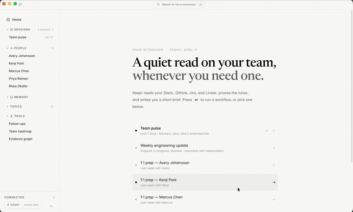

Keepr turns your team's Slack and GitHub exhaust into weekly team pulses and 1:1 prep. It runs on your laptop. Your data never touches a middleman server.

Monday-morning read of what happened across your team last week, evidence-backed and cited.
Context for an upcoming 1:1 with recent work, open threads, and follow-up items.
Stakeholder-ready summary: shipped, in progress, blocked, upcoming.
Observed facts persisted as plain markdown files. Open them in Obsidian, grep, or commit to a private repo.
Nothing phones home. No backend, no account, no analytics. Keepr cannot see your sessions.
Keepr operates no servers. Your data leaves your laptop in exactly two directions: to the original sources you already trust (Slack, GitHub) and to whichever LLM provider you configured.
No middleman vendor holds your data. Your team's content is never pooled with other customers. The number of parties who see it is two instead of three.